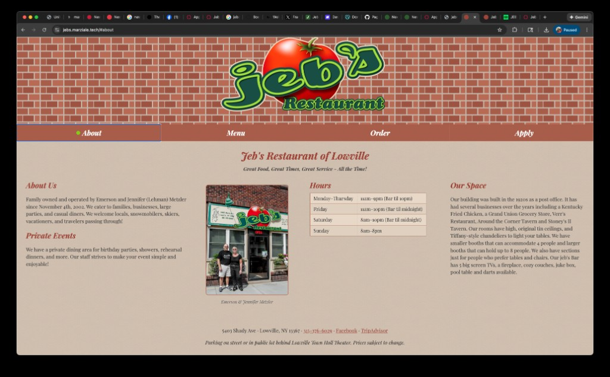
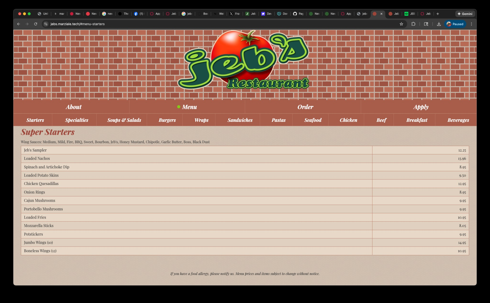
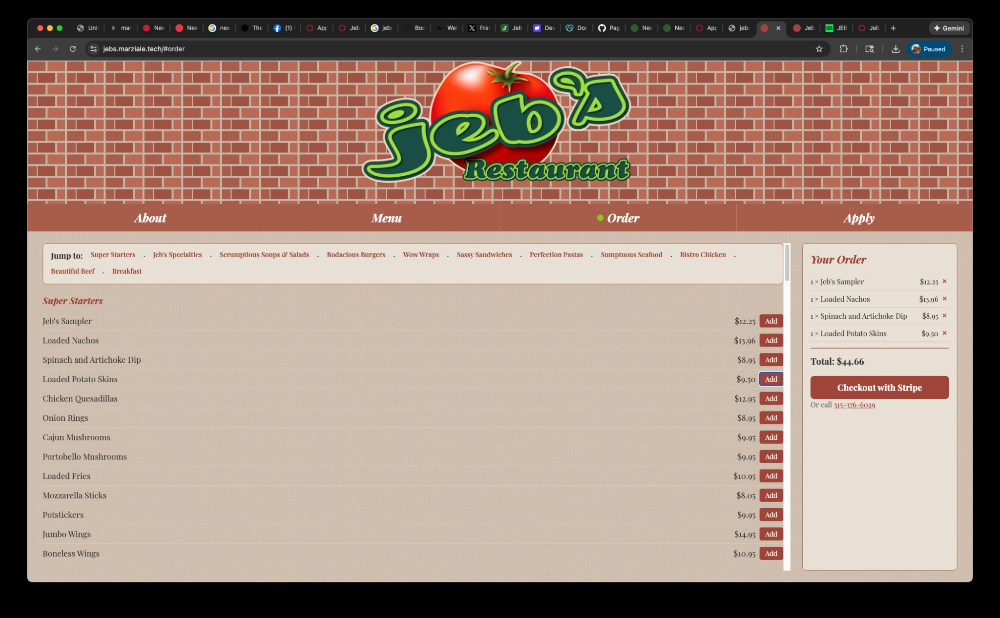
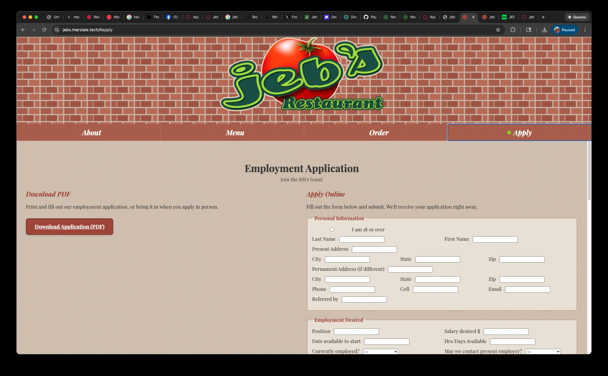

Product Overview — jebs.marziale.tech
This document provides an overview of the website built for Jeb's Restaurant of Lowville, NY. The site offers a complete online presence for the restaurant, including information about the business, a full menu, online ordering with Stripe checkout, and an employment application system.
The About section introduces Jeb's Restaurant with the tagline "Great Food, Great Times, Great Service - All the Time!" It features information about the family ownership (Emerson and Jennifer Metzler since 2002), private event offerings, operating hours, and a description of the restaurant's historic space—including original tin ceilings, Tiffany-style chandeliers, and bar amenities. Contact details, Facebook, and TripAdvisor links are included in the footer.
About page showing restaurant info, hours, and Our Space description
The Menu section organizes offerings into categories: Starters, Specialties, Soups & Salads, Burgers, Wraps, Sandwiches, Pastas, Seafood, Chicken, Beef, Breakfast, and Beverages. Each category displays items with descriptions and prices in a clean, readable layout. Sub-navigation allows quick jumping between sections.
Menu Starters section with wing sauces and appetizer listings
The Order page enables customers to browse the full menu, add items to a cart, and checkout via Stripe. A persistent order summary sidebar shows selected items and total. Users can also call 315-376-6029 to place orders by phone. The interface mirrors the menu structure for consistency.
Order page with menu items, cart, and Stripe checkout
The Apply section supports two application methods: a downloadable PDF for print or in-person submission, and an online form that submits directly to the restaurant. The form includes personal information, employment desired, availability, and referral fields—matching the PDF application for consistency.
Employment Application with PDF download and online form options